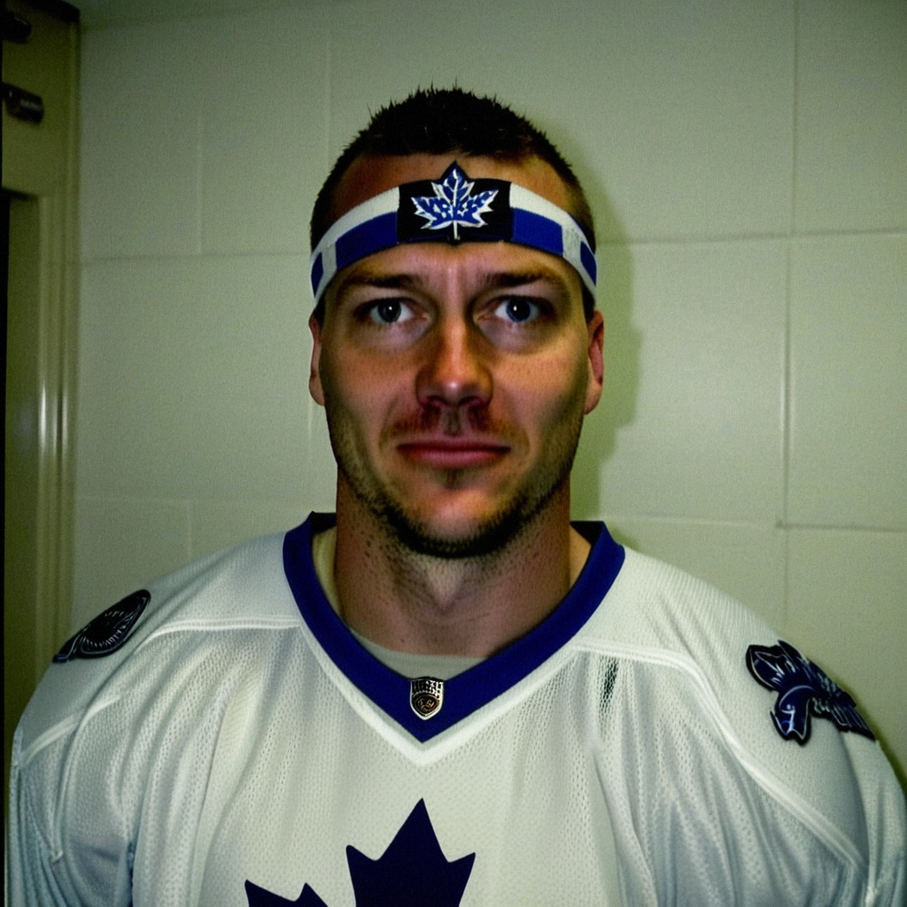

Sundin buries three at New Jersey, and the shorter shift shows
The Maple Leafs captain scored three in a 4-1 road win and talked about what reading the play early, instead of winning it, has done to his game at 33.
 Jan KowalczykRinkside reporter and studio host · The Tunnel
Jan KowalczykRinkside reporter and studio host · The Tunnel
2:32 · synthetic voices, produced from the record · download
 Mats Sundin88 scored three goals in a 4-1 road win at
Mats Sundin88 scored three goals in a 4-1 road win at  New Jersey Devils on January 3. He is at 52 points in 39 games this season, playing 17.3 minutes a night.
New Jersey Devils on January 3. He is at 52 points in 39 games this season, playing 17.3 minutes a night.  Toronto Maple Leafs are 29-6-1, 65 points in 39 games, the best record in the league.
Toronto Maple Leafs are 29-6-1, 65 points in 39 games, the best record in the league.
Transcript
Jan Kowalczyk here in the tunnel at the Izod with Mats Sundin. Mats, three goals tonight, 28 in 39 games. You told me last time the first period was the thing you had to fix. Did the video help?
Yeah, Jan. The first period... I think we are better tonight. Before, we carry across and we look, and the man is already there. Tonight we... pass first. We arrive second. That is the difference, for sure. The legs are good. The first pass is what we fixed.
You said to me a couple of weeks ago that you play ahead of the play now, to keep pace with Gaborik's short shifts. Three goals in 17 minutes. What has that change done, exactly?
I do not... it is not a change like a switch, you know. I am 33. The legs are not... I cannot be the first man there like I was at 24. So I start the play earlier. I am in the slot before the puck crosses the blue line. With Marian on the wing, he is so fast, the play goes from one end before I can arrive. So I do not arrive. I am already there. That is all.
And 29 and 6 and 1. Sixty-five points in 39 games. What does it feel like inside that room, being that far ahead of everybody?
It feels... the same. That is maybe the honest answer. We come in, we watch, we play. You do not feel 65 points in the middle of the second period. You feel the shift in front of you. The record is... nice. But tonight I remember the game, not the table.
New Jersey had 22 shots and you had 18, and you won by three. Does that tell you something about how this team is built?
Well, when it is four to one, New Jersey, they must take chance. They must open up. And when they open up, the ice is big, and that is... that is our game. Marian is fast in the open ice. Alexander sees the whole thing. So maybe the shots are different when you are three up. I do not look at them.
Alexander had two assists tonight. You two have been on the same side for a while now. When you are out there with him, what is he seeing that you are not?
He is... the first man I have played with who has the puck before I see the gap. Before I know it is open, Alexander already has it on his stick. I have been here a long time. The hands I have seen. He is... he is in the room. I just get there, and he puts it somewhere the other man cannot reach. Tonight was easy for me, for sure.
Twenty-eight goals in 39 games. Last year you had 53 in 82. Does the pace sit with you, or do you not look at it?
I do not look at it. The games come fast, January, February, it is the same. I go home, I sleep, I come tomorrow. That is the whole thing.
Mats, thank you. Safe flight back to Toronto.
Thank you, Jan. Good night.